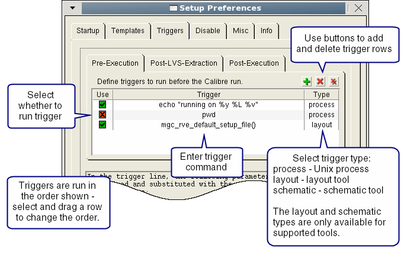

You can instruct
Calibre Interactive to run internal triggers before and after the
Calibre run. Multiple trigger functions may be specified for each
stage. If you are connected to a supported design tool, you can
also specify procedures that run in the design tool environment.
Prerequisites
For
triggers that run in the Linux shell:
A trigger program written
in the shell programming or scripting language of your choice (Awk,
Sed, or Perl, for example). See “Processing a Netlist Before the Calibre Run” in the Calibre Solutions for Physical Verification manual
for a simple script run as a trigger.
For
triggers that run in the design tool (Cadence Virtuoso, Cadence
Encounter, Synopsys IC Compiler, and Calibre DESIGNrev):
A
procedure written in SKILL or Tcl, depending on your design tool.
The procedure should return the proper success or fail return code
for the design environment. Calibre Interactive halts execution
if the return value indicates failure.
Calibre
Interactive was invoked from the design tool or the environment
variable MGC_CALIBRE_ALLOW_VIEWER_TRIGGERS is set to “always”. See “Trigger Access to the Design Tool Environment”.
For an example, see “Internal Trigger Executed in Calibre DESIGNrev to Count Layout Cells”.
Video
“How To Do Pre- and Post-Processing with Calibre Interactive
Internal Triggers”
Run a pre-processing
script in the shell environment
Run a SKILL
procedure in Cadence Virtuoso before the Calibre run
Use replaceable
parameters as trigger arguments
Procedure
- Choose .
- Click the Triggers tab.
- Click the Pre-Execution tab.
- Add trigger information to
the table as shown in Figure 1. See the dialog box or “Trigger Parameters for Internal Triggers in Calibre Interactive” for a
list of available parameters.
Figure 1. Calibre Interactive
Internal Triggers
Triggers are executed in the
order shown; drag and drop a row to change the order.
The Type column specifies the
where the trigger runs:
Trigger Type
|
Execution environment
for trigger
|
|---|
process
|
(default) Run as a Linux
process.
|
layout
|
Run in the layout viewer.
(Cadence Virtuoso, Cadence Encounter, Synopsys
IC Compiler, and Calibre DESIGNrev only)
|
schematic
|
Run in the schematic
viewer.
(Cadence Virtuoso only)
|
By default, layout and schematic
triggers can only run in the design tool session that invoked Calibre
Interactive. See “Trigger Access to the Design Tool Environment” for further information.
- Click the Post-Execution tab
and enter trigger information as shown in Figure 1. The following options are also available
for post-execution triggers:
Run trigger in background —
Run the post-execution trigger as a background process.
Also run trigger if Calibre is terminated by user —
Run the post-execution triggers if the Calibre process is terminated
by the user. By default the trigger is not run if the Calibre run
is terminated.
Run on remote host —
Run the post-execution triggers on the same host as the main Calibre
run. This setting only applies to triggers of type “process” (see Figure 1). By default, the post-execution
trigger is run on the local host (the host running Calibre Interactive).
The following statements apply
when this option is enabled:
The post-execution trigger
runs on the host specified by the “Run Calibre on” setting in Run
Control pane on the Performance tab.
The post-execution trigger
script is added to the control script for the Calibre run.
The control script preserves
the Calibre exit code on return. The exit code of the post-execution
trigger is not kept.
For
Calibre MTflex runs, the control script is added to the primary
host’s script.
If using a Post-LVS-Extraction
trigger during a Calibre Interactive PEX run, the Post-LVS-Extraction
trigger is added to the PHDB control script.
If this setting is enabled,
post-execution layout- and schematic type triggers are run in the
design tool after the process-type triggers complete execution.
- (Optional) If you are running
Calibre Interactive PEX you can enter triggers on the Calibre
Post-LVS-Extraction tab. These triggers run following
the PHDB generation step of a PEX run. For more information on enabling
PEX steps, see “Controlling PEX Step Execution”.
- Click OK.
Results
If
the pre-execution trigger returns an error code, the subsequent
Calibre execution is canceled. If the Calibre run itself fails,
the post-trigger is not executed.
If a trigger function exits with an error code, the error code
is printed to the transcript. The message has the following general
format:
Trigger function <trigger_function> exited with return code <code>.
<error_message>
child process exited abnormally